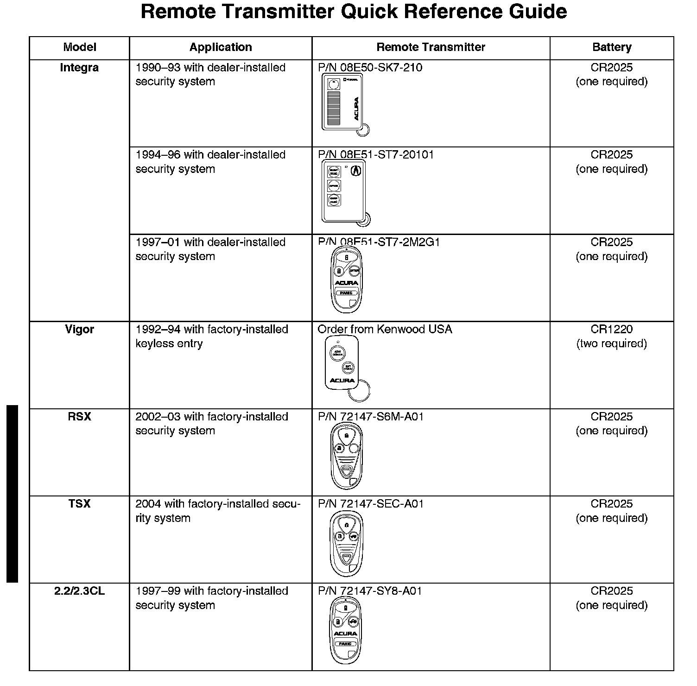
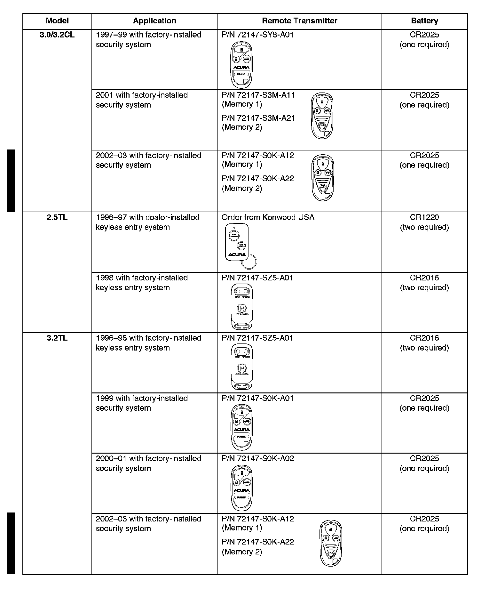
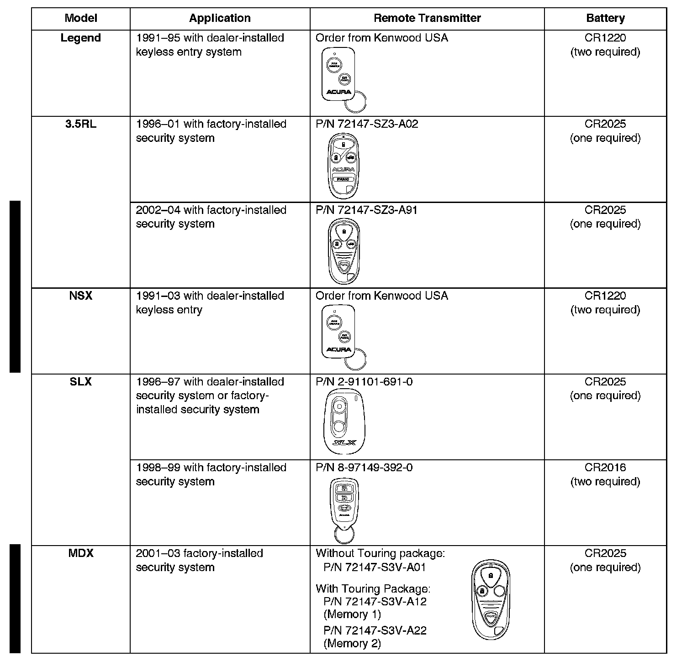

Keyless Entry - Description/Identification/Programming: Overview
97-040May 19, 2003
Applies To:
ALL
Keyless Remote Transmitter Information
(Supersedes 97-040, dated October 1, 2001)
Updated information is shown by black bars and asterisks.



This service bulletin gives you information about keyless remote transmitters for most Acura vehicles. Each procedure describes transmitter programming (if applicable), transmitter ordering, and transmitter batteries. A transmitter quick reference guide shown.

Disclaimer